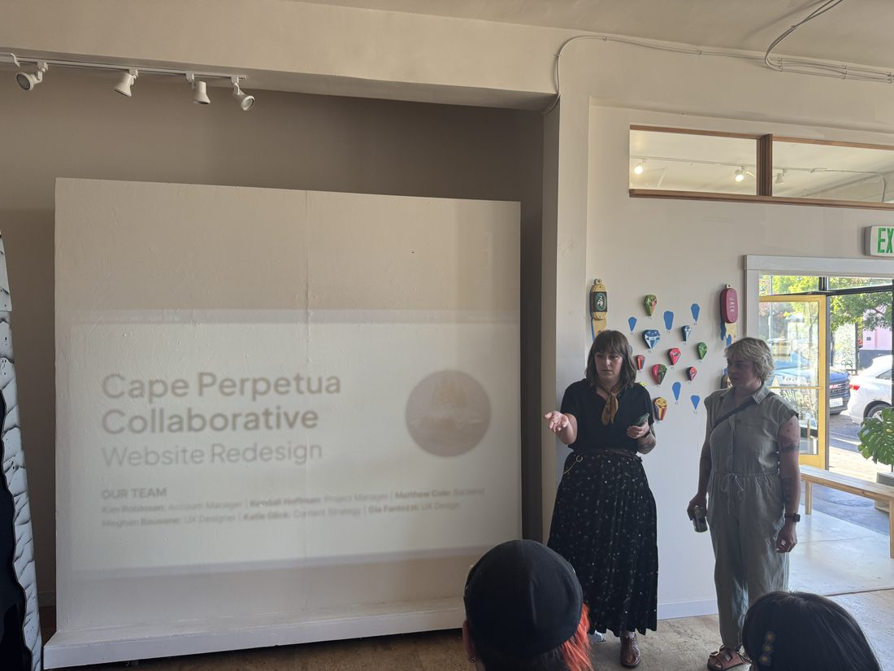

From city hall to federal government to AI agents, he builds the systems people depend on.
Service design, UX, information architecture and design leadership.
[Optional further intro.] He founded Vloora, an agent experience (AX) product company, and teaches urban technology at the University of Michigan.
How services actually work

His work starts from how a public service functions for the person on the receiving end. He calls that Public Mechanics, and he teaches it at the University of Michigan.
The practice comes from years inside the work. He founded Portland Digital Corps, which put more than 100 technologists on six nonprofit projects at no cost. He ran design operations at Nava PBC, headed design at 18F, and launched the Global Office of Public Delivery, which he now advises.
He named Consequence Design in 2017, and carries the same argument to stages like IxDA Oslo and Throughline in his talk Design as Repair.
Who holds the pen
When software makes a call on someone's behalf, somebody should be able to say who decided and find the record. That question runs through everything he builds now.
Vloora, his agent experience company, is built around it. So are the tools he ships in public, like closedtab, which reviews the work AI agents do, and the live indices he built for State Capacity AI, which track more than 2,300 AI models every day. He also sits on the W3C Agent-to-Web Framework Community Group.
Build what's missing

He builds the institutions he wants to exist. He founded Indianapolis Design Week and Portland Design Month, and served as board president of AIGA Portland.
As one of Oregon's two state tennis co-chairs, he led the redesign of the state team tournament and built oregontennis.org, the most advanced high school tennis ranking system in the country.
Reading
Shelf on LiteralColophon, with Digressions
[One deadpan line, yours.]
Set in PP Neue Montreal and Author, with PP Pangram Sans for the small parts.